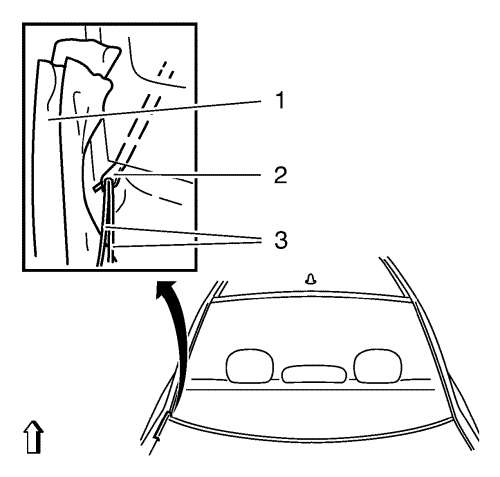
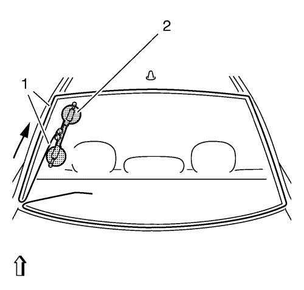
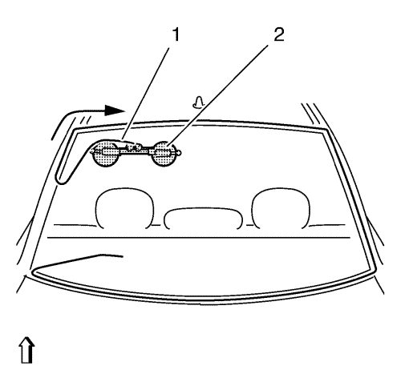
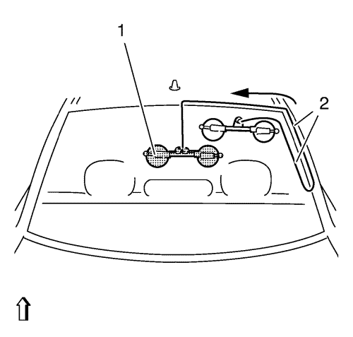
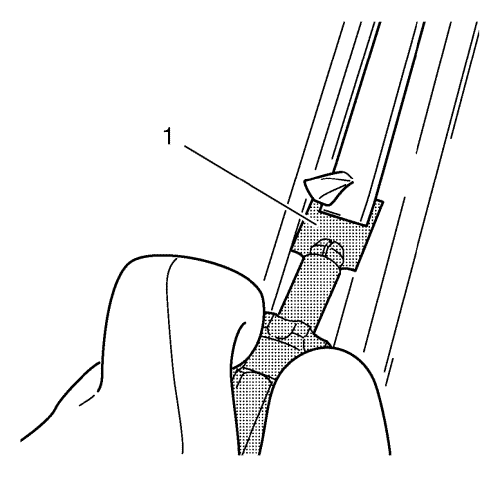

- Colocar el vehículo en un suelo equilibrado y colocar las ruedas delanteras en posición de marcha en línea recta.
- Desconecte la batería. Consultar Desconexión y conexión del cable de batería negativo .
- Retirar el revestimiento de acabado superior del portón trasero. Consultar Sustitución del revestimiento de acabado superior del portón trasero .
- Retirar el revestimiento de acabado del portón levadizo. Consultar Sustitución del revestimiento de acabado del portón levadizo .
- Retirar el revestimiento de acabado inferior del portón trasero. Consultar Sustitución del revestimiento de acabado inferior del portón trasero .
- Desmonte la tercera luz de freno. Consultar Sustitución de la tercera luz de freno .
- Desmonte el motor del limpiaparabrisas trasero Consultar Sustitución del motor del limpiaparabrisas trasero .
- Desconecte los conectores eléctricos de las barras conductoras del desempañador de la luneta del portón trasero.
- Cubra las siguientes zonas para protegerlas de los fragmentos de los cristales rotos:
| • | Acolchado del tablero de instrumentos superior |
- Utilice el sistema BO-46974 para desmontar la luneta del portón trasero.
- Efectúe la medición de la diagonal (1) de la luneta del portón trasero.
- Corte el alambre de cortar a la longitud requerida.

- Caliente la lezna de inserción con una herramienta adecuada.
Nota: Asegúrese de no dañar la luneta del portón trasero en este proceso. De otra manera, podrían producirse fisuras por tensión en la luneta del portón trasero. Proteja la zona con cinta textil (1).
- Introduzca la lezna de inserción a través de la cinta de pegamento en la zona del montante C inferior.
- Introduzca el alambre a través.
| • | Enhebre ambos extremos del alambre de cortar (3) en los orificios de la lezna de inserción (2) y enróllelos. |
| • | Use el punzonador (2) para extraer el alambre de cortar del centro de la luneta del portón trasero. |

- Sitúe el alambre bajo la luneta del portón trasero en todo su perímetro.
Nota: El alambre de cortar (1) deberá enrollarse bajo la junta de goma (2) del cristal en todo el contorno de la luneta del portón trasero.
- Tire del alambre restante hacia el interior.

Nota: Asegúrese de que el alambre de cortar esté correctamente ajustado al rodillo de deflexión del cabrestante.
- Coloque el cabrestante (2) con dos cabezales de devanado en el interior de la luneta del portón trasero.
| • | Coloque el cabrestante verticalmente a la misma altura que el montante C. |
| • | Enganche el alambre de cortar (1) al cabrestante (2). |
| • | Insertar la carraca de transferencia y el alambre de cortar pretensado. |
Nota: La flecha muestra la dirección que sigue el cable de cortar.
- Recorte la luneta del portón trasero hasta que el alambre de cortar esté al nivel con el cabrestante.

Nota: Asegúrese de que el alambre de cortar esté correctamente ajustado al rodillo de deflexión del cabrestante.
- Coloque el cabrestante (2) con dos cabezales de devanado en el vehículo.
| • | Coloque el cabrestante (2) en el área del marco del techo. |
| • | Insertar la carraca de transferencia y el alambre de cortar pretensado (1). |
Nota: La flecha muestra la dirección que sigue el cable de cortar.
Nota: Se requiere más esfuerzo de corte en el área del radio de la luneta del portón trasero.
- Recorte la luneta del portón trasero hasta que el alambre de cortar esté al nivel con el cabrestante.

Nota: Compruebe que el alambre de cortar esté correctamente situado en el rodillo inversor del cabrestante.
- Coloque el cabrestante (2) con dos cabezales de devanado en el vehículo.
| • | Coloque el cabrestante (2) en la zona del medio de la luneta del portón trasero. |
| • | Insertar la carraca de transferencia y el alambre de cortar pretensado (1). |
Nota: La flecha muestra la dirección que sigue el cable de cortar.
- Recorte la luneta del portón trasero hasta que el alambre de cortar esté al nivel con el cabrestante.

Nota: Asegúrese de que el alambre de cortar (3) esté correctamente ajustado al rodillo de deflexión del cabrestante.
- Coloque el cabrestante con un cabezal de devanado en el interior de la luneta del portón trasero.
| • | El cabrestante (1) con 2 cabezales de devanado se queda en la posición. |
| • | Coloque el cabrestante (2) con un cabezal de devanado en el área del montante C inferior. |
| • | Rosque el segundo extremo del alambre (3). |
| • | Introduzca la carraca de transferencia y aplique tensión al alambre de cortar. |
Nota: La flecha muestra la dirección que sigue el cable de cortar.
Nota: Se requiere más esfuerzo de corte en el área del radio de la luneta del portón trasero.
- Recorte la luneta del portón trasero hasta que el alambre de cortar esté al nivel con el cabrestante.

Nota: Comprobar que el alambre de cortar esté correctamente colocado en el rodillo de deflexión del cabrestante.
- Coloque el cabrestante (1) con un cabezal de devanado en el vehículo.
| • | Posicione el cabrestante (1) con un cabezal de devanado en la zona superior del marco de la luneta del portón trasero. |
| • | Insertar la carraca de transferencia y el alambre de cortar pretensado (2). |
Nota: La flecha muestra la dirección que sigue el cable de cortar.
Nota: Se requiere más esfuerzo de corte en el área del radio de la luneta del portón trasero.
- Recorte la luneta del portón trasero hasta que el alambre de cortar esté al nivel con el cabrestante.

Nota: Compruebe que el alambre de cortar (2) esté correctamente situado en el rodillo inversor del cabrestante.
- Coloque el cabrestante (1) con un cabezal de devanado en el interior de la luneta del portón trasero.
| • | Coloque el cabrestante (1) con un cabezal de devanado junto al cabrestante con dos cabezales de devanado para que el alambre de cortar (2) quede cruzado. |
| • | Insertar la carraca de transferencia y el alambre de cortar pretensado. |
Nota: La flecha muestra la dirección que sigue el cable de cortar.
- Recorte la luneta del portón trasero hasta que el alambre de cortar (2) haya traspasado totalmente el lecho de pegamento.
- Desmonte el sistema de desmontaje de cristales.
- Encaje y bloquee el soporte BO-641 en la luneta del portón trasero.
Nota: Se requiere un segundo mecánico.
- Extraiga la luneta del portón trasero.

- Corte la cinta adhesiva con la cuchilla (1) que se adjunta hasta alcanzar un espesor de 1 mm (0,039 pulg.) en todo su contorno.
- Reparar cualquier daño a la pintura.
Utilizar un lápiz de retoque de pintura para igualar el color del vehículo y reparar cualquier daño a la pintura.
- Si la goma de la luneta del portón trasero está dañada, sustitúyala con una nueva.
- Corte el cordón de pegamento del cristal.
Corte la cinta adhesiva con la cuchilla que se adjunta hasta alcanzar un espesor de 1 mm (0,039 pulg.) en todo su contorno.